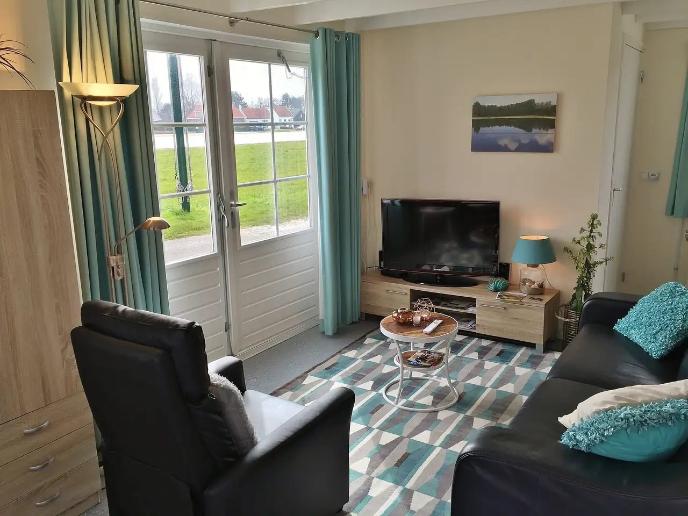
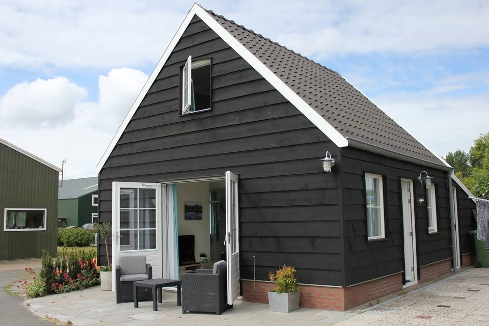
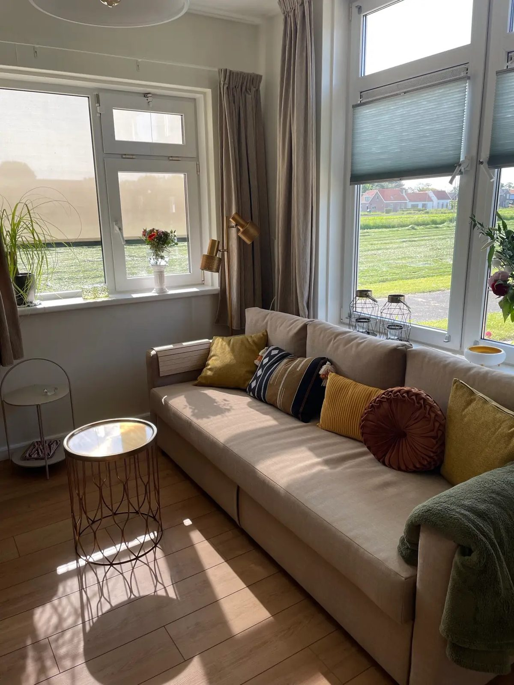
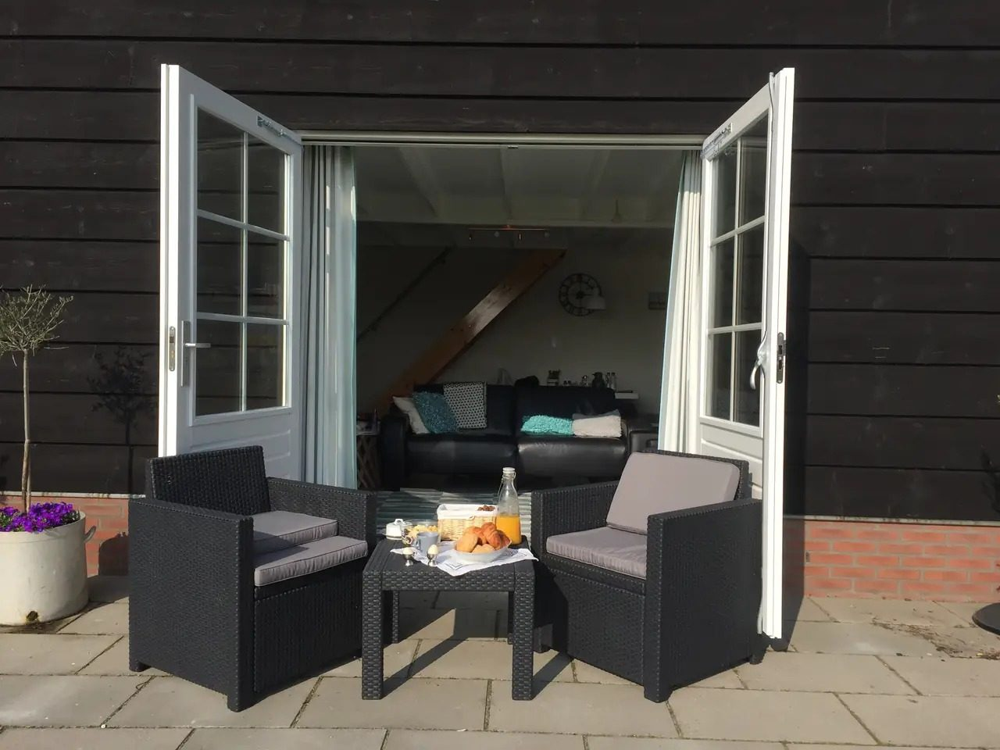
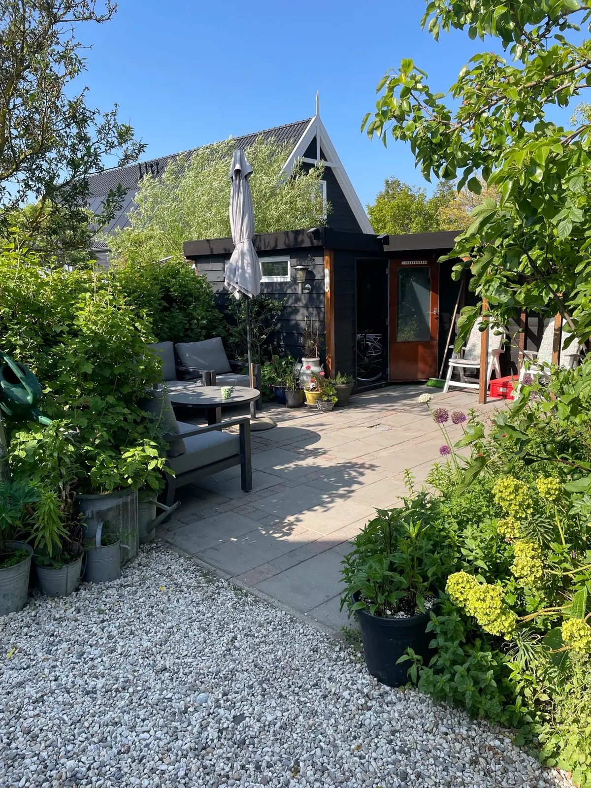
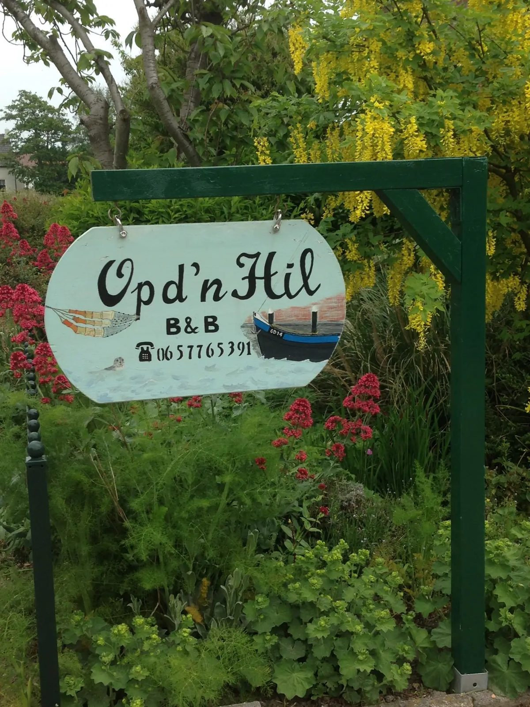

Het gastenhuisje
Een vrijstaand houten huisje met eigen ingang, woonkamer met keuken en openslaande deuren naar het terras.
25 m² · 2 personenMeer info

Ons gastenhuisje en de studio hebben allebei een eigen ingang en keuken, landelijk gelegen op 2 km van het centrum van Ouddorp, vlak bij het Grevelingenmeer. Het strand ligt op 5 km.
Een hele fijne b&b, flexibele ontvangst, schoon en ruim huisje voor onszelf met alle faciliteiten.Wendy W. · 9,6 op Bedandbreakfast.nl
Allebei voor maximaal 2 personen, met een eigen ingang en een eigen keuken. Zo zie je meteen welke foto's bij welk verblijf horen.

Een vrijstaand houten huisje met eigen ingang, woonkamer met keuken en openslaande deuren naar het terras.

Nieuw: een appartement in ons huis met eigen ingang, keuken, zitkamer, slaapkamer en badkamer. Met airco.

Kom je voor een kort verblijf, dan kies je zelf of je ontbijt erbij wilt. We maken het met streekproducten en eigengemaakte producten.
Blijf je langer dan 5 dagen? Dan verblijf je zonder ontbijt en kook je in je eigen keuken.
Op d'n Hil ligt in een landelijke, agrarische omgeving, ongeveer 2 km van het centrum van Ouddorp. Je zit in de tuin, op het terras of achter bij de weilanden. Bij mooi weer steek je de barbecue aan.
Fietsen stal je op het terrein of in het schuurtje. Heb je zelf geen fiets bij je, dan kun je er bij ons een huren.


Een hele fijne b&b, flexibele ontvangst, schoon en ruim huisje voor onszelf met alle faciliteiten. Onder de overkapping is het gezellig eten met uitzicht over de weilanden. Voor ons de perfecte plek om te overnachten tijdens onze kustpad wandelingen.
Wendy W.september 2026Alles was prima. Ruim huisje met alles wat je nodig hebt. Prima bed !!! Mooie rustige locatie, vriendelijke ontvangst. En een heerlijk ontbijt.
Addie de B.september 2026Hartelijk en vriendelijk ontvangst, complete voorzieningen, uitgebreid en goed verzorgd ontbijt.
Chantal B.oktober 2026Wandelen over de oude kerkenpaden, fietsen langs het water of een dag naar het strand. Alles ligt dichtbij.
Het meer ligt vlak bij de B&B. Mooi wandelen langs het water.
De Brouwersdam en de stranden liggen op 5 km afstand.
Natuurgebied dat je met de fiets goed bereikt.
Nog een natuurgebied in de buurt om op de fiets te ontdekken.
Mooi wandelen over de oude kerkenpaden in de omgeving.
Het dorp ligt op ongeveer 2 km, met de fiets zo bereikt.
Laat weten wanneer je wilt komen en welk verblijf je voorkeur heeft. Je reserveert rechtstreeks bij ons.
Vragen over beschikbaarheid, ontbijt of een weekverblijf? We helpen je graag.